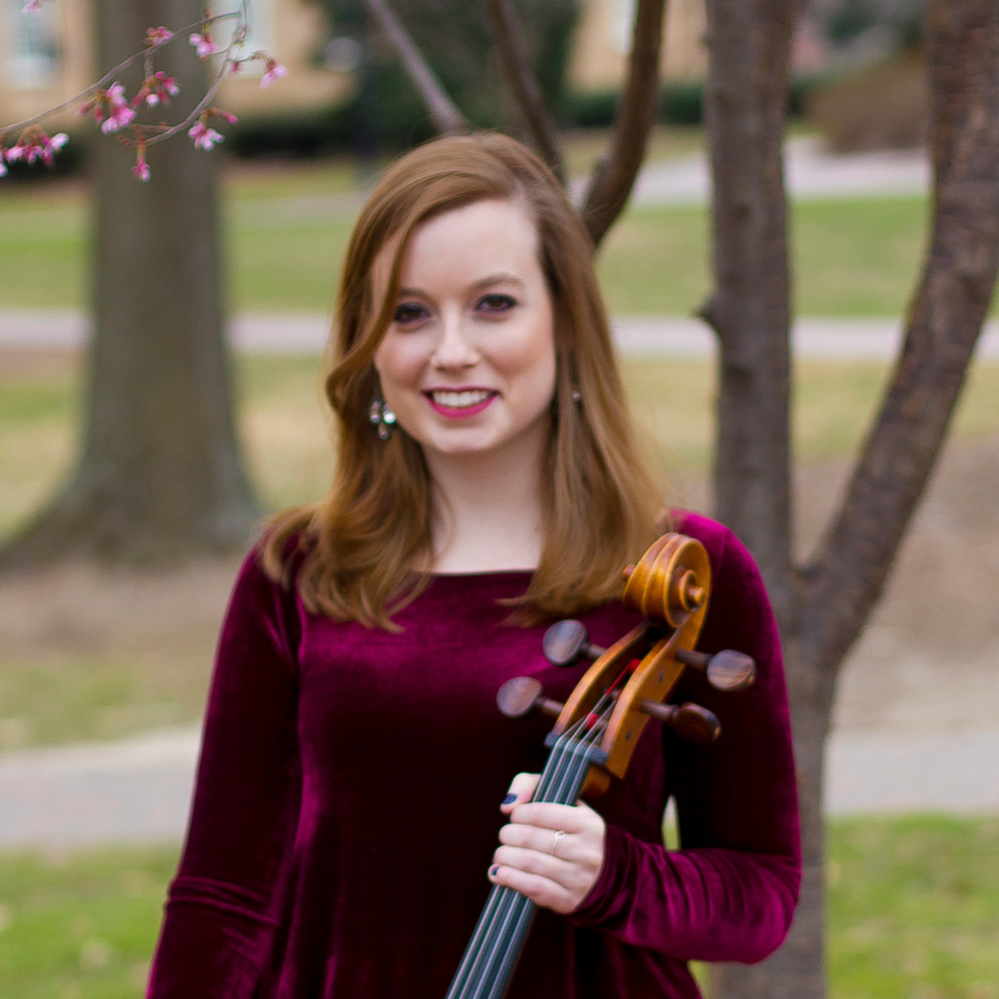

Audrey Atherton received her Bachelor of Music degree from the University of North Carolina in Chapel Hill, where she studied cello performance with Brent Wissick and completed a second major in Mathematical Decision Sciences. At UNC, Audrey was a member of the UNC Symphony Orchestra and served as principal cellist during her senior year. In December 2012, she won the university’s annual concerto competition and performed as a soloist with the orchestra.
Before UNC, Audrey attended the South Carolina Governor’s School for the Arts and Humanities and was a member of the Carolina Youth Symphony, serving as their principal cellist from 2005 until 2009. She was selected as the winner of the 2007 CYS Concerto Competition, the 2008 Crouch Award for Most Outstanding Underclassman Musician, and the 2009 Chesebro Award for Most Outstanding Senior Musician.
In 2014, Audrey founded the MARS String Quartet with former colleagues from the UNCSO and UNC Baroque Ensemble. In her spare time, Audrey is a freelance musician and member of the Carolina Philharmonic. She frequently performs with local musician booking services, musical theater pit orchestras, and is a former member of the Raleigh and Fayetteville Symphony Orchestras.
Audrey lives with her husband and two-year-old son in Wake Forest, NC and works as an implementation engineer for a healthcare-focused software startup.